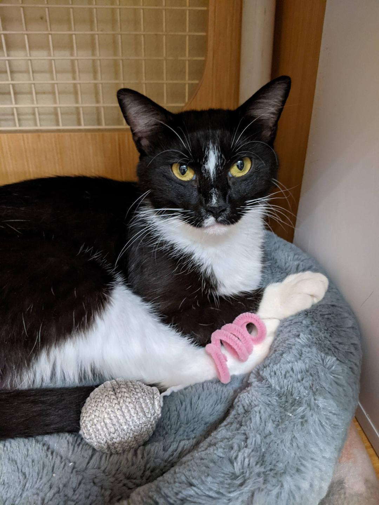
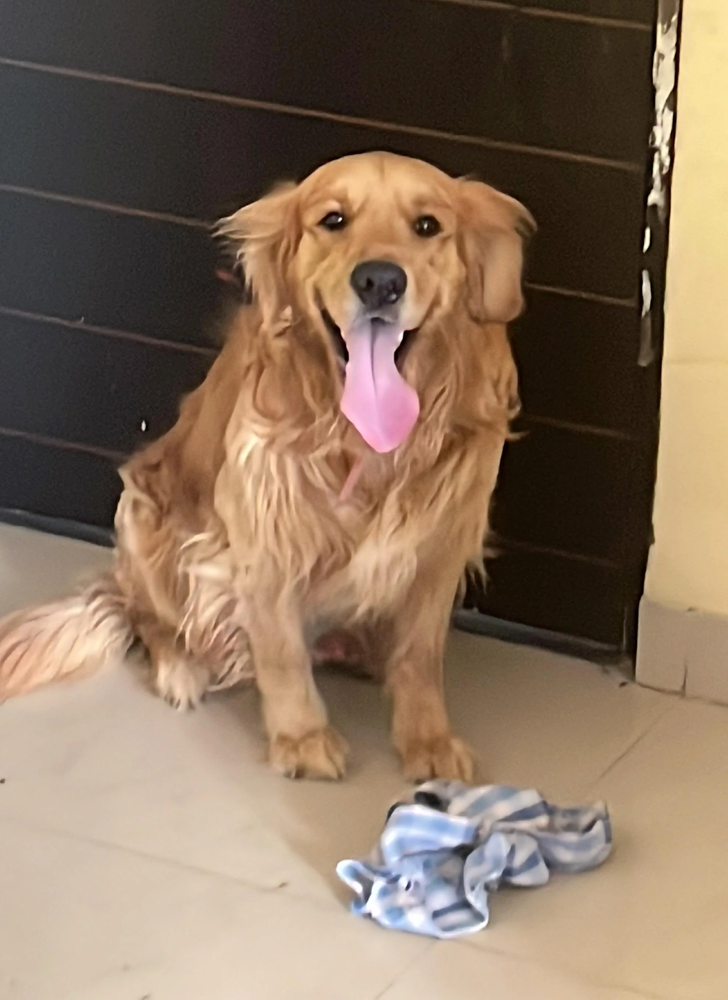

Adoptable Pets

Buddy
Age: 3 years | Breed: Labrador Mix

Luna
Age: 2 years | Breed: Domestic Shorthair

Max
Age: 1 year | Breed: Golden Retriever
Find a furry friend to adopt from our list of local shelters and adoption centers.
Adopting a pet is a big responsibility. Here are some tips to ensure you're ready:
Age: 3 years | Breed: Labrador Mix
Age: 2 years | Breed: Domestic Shorthair
Age: 1 year | Breed: Golden Retriever
Below are some local shelters and rescue centers where you can adopt pets: